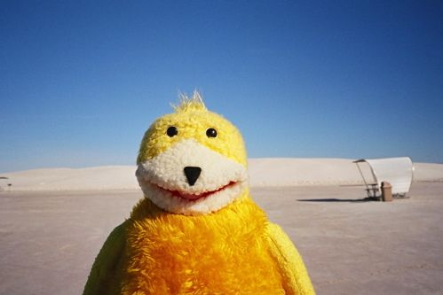

1. In Core 1: Interaction, I mostly used html and css to create a collection of websites. I have very little experience working with Javascript; however, code with JS was mostly done by Chat GPT last semester.
2. Core 1: Interaction is the only class that I have taken where I experienced HTML/ CSS/ JS
3. I enjoyed working with simple animations and hover effects.
4. I felt like I was often not deliberate with my coding. So a lot of times, I was, “Why is it working?” or “Why is it not working?” I was also really confused with arranging text, and images at the exact place that I wanted them to be.
5. I am more nervous than excited about learning how to code. My Core 1: Interaction professor wasn’t really clear when teaching the basics of coding. Therefore, it was mostly self-taught last semester, which made me face a lot of confusion and frustration. I feel that structured class lectures and in-class work time can help to reduce this anxiety.
6. I feel like I will use coding when I make a website that has archives/ portfolios of my work.
7. Visual Studio Code since it’s the one that I used last semester.
8.
HTML: It's a room
CSS:It is all the decorations for the room. For example, lamps, rugs, photo frames, etc.
JS: A person in the room. This person moves furniture and objects around the room, and makes things function interactively.
9.
10.
11.

12.
13.
14.
15.
16.